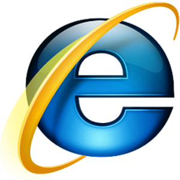

La funcionalidad básica de un navegador web es permitir la visualización de documentos de texto, posiblemente con recursos multimedia incrustados. Además, permite visitar páginas web y hacer actividades en ella, es decir, enlazar un sitio con otro, imprimir, enviar y recibir correo, entre otras funcionalidades más.
Internet Explorer (anteriormente Spyglass Mosaic) fue la apuesta tardía de Microsoft para entrar en el mercado y consiguió desbancar al Netscape Navigator entre los usuarios de Windows, debido a la integración del navegador con el sistema operativo y al hecho de que era gratuito, mientras que Netscape tenía costo, llegando a poseer cerca del 95% de la cuota de mercado. Netscape Communications Corporation liberó el código fuente de su navegador, naciendo así el proyecto Mozilla.

Finalmente Mozilla (Mozilla Application Suite) fue reescrito desde cero tras decidirse a desarrollar y usar como base un nuevo conjunto de widgets multiplataforma basado en Extensible Markup Language (XML) llamado XUL y esto hizo que tardara bastante más en aparecer de lo previsto inicialmente, apareciendo una versión 1.0 de gran calidad y para muchísimas plataformas a la vez el 5 de junio de 2002.
El 7 de enero de 2003, Apple lanzó al mercado el navegador web Safari. Este navegador se hace con casi la totalidad del mercado de las microcomputadoras Mac, debido a su velocidad y gran cantidad de actualizaciones. Asimismo, también entra al mercado del sistema operativo Windows.
A finales de 2004 aparece en el mercado Mozilla Firefox, una rama de desarrollo de Mozilla que pretende hacerse con parte del mercado de Internet Explorer. Se trata de un navegador más ligero que su hermano mayor.

El 2 de septiembre de 2008, Google Chrome aparece en el mercado. Es el navegador web desarrollado por Google y compilado con base en componentes de código abierto como el motor de renderizado de WebKit y su estructura de desarrollo de aplicaciones (framework). Está disponible gratuitamente bajo condiciones de servicio específicas. El nombre del navegador deriva del término usado para el marco de la interfaz gráfica de usuario ("chrome"). En diciembre de 2011, Chrome superó a Internet Explorer 8.0 como el navegador más utilizado a nivel mundial.